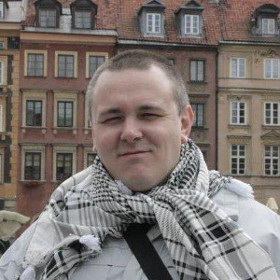

Max Shaposhnikoff

 Max Shaposhnikoff
Max Shaposhnikoff
Senior Linux SysAdmin / Devops Engineer
Kiev,Ukraine
Summary
Build and Configuration Manager, DevOps Engineer
Birth 12.01.1976
Phone: +380688062252
skype: shaposhnikoff
Education
Moscow Technical University of Communication and Informatics (MTUCI) 1992 - 1997
Software of computers and automation systems
Certifications
* TCP/IP Administration - 2000, Brainbench
* Linux Administration (General) - 2001,2009 Brainbench
* OpenStack System Administrator Certification ( MCA200) 2015
Skills and Qualifications
Extensive experience in the design and implementation of Continuous Integration, Continuous Delivery, Continuous Deployment
and DevOps processes for Agile projects, working with technologies and platforms including Java, Jenkins, Git, UNIX/Linux,
Docker, Vagrant, Ansible and AWS/EC2
Over 20 years IT UNIX/Linux Admin experience, and a Middleware/Application Server Specialist;
developing for and automating deployments of Hybris, Tomcat and AWS.
Detailed technical knowledge and hands-on experience of Build Engineering, Configuration Management and DevOps Engineering
--
Linux, Docker, Swarm, Kubernetes, Mesos, Consul[-template], Packer, Vagrant, MySQL, Redis,
Shell, Ansible, Solr, Artifactory, Nexus, Git, Nginx, Nagios, Zabbix, Hybris, HAProxy, SQL, Apache,
Logstash, Elasticsearch, Kibana,Fluent-bit/Fluentd, FreeRADIUS, TCP/IP, DNS, SNMP, LDAP, RADIUS, HTTP(S), RESTful, XML, JSON.
--
Jenkins - Release build out, environment, deployment, configuration, continuous delivery, Gerrit integration
--
Docker - pack Java microservices into a shipping containers , which will be deployed to Kubernetes.
--
Kubernetes - Jenkins CI/CD integrations, include creating fully automated build environments, with Amazon EC2 container service
as Docker registry, Kubernetes as Jenkins nodes runner and Spring Boot application Docker images hosting.
Centralized pods logging , using Elasticsearch/Fluent-bit
HELM package creation , to improve deployment speed.
--
Centos, Debian, Ubuntu, CoreOS
Virtualization - Docker, KVM, LXC, Libvirt, Vagrant
Mirantis OpenStack MCA200
--
Backup, automation infrastructure changes with Ansible
--
Tracking system - Redmine, Jira,Trac
Monitoring - Nagios Cacti Munin Observium Zabbix
--
Self-educated, self-motivated, responsible, sociable, good team player, ability to work under pressure.
--------------------------------------------------- Related Expirience -------------------------------------------------------
EPAM Systems
Jan,2015 - Till Now
http://epam.com
Senior Devops Engineer
* Design and develop continuous deployment pipeline, integrating Test-Kitchen, Docker, Git , Jenkins and Ansible across geographically separated hosting zones in AWS.
* Performed new Ansible automation to replace old-bash-style scripting tools to provide Continous integration /
Continous delivery of results working of Development team
* Performed custom Docker integration solution to run test suites ( functional, unit, web, integration tests ) -
running tests in docker-compose created environment with hybris image and wide range of mysql database versions.
* Developed from scratch fully completed CI/CD solution (Jenkins/Docker/Ansible based) to build and deploy artifacts starting from git pull and ending to checking Hybris startup logs and email notification to dev team members.
* Developed many fully customized Ansible playbooks for maintanence next application on customer cloud - Apache Solr Cluster, SMTP server Postfix.
* Also, created and maintained everyday ansible automation and special automated branch to GoLive production environment's
* Collect the new technologies and tools, and introduced them to the client; in which way it helped the company build up an agile development environment.
It improved the product quantity and the work efficiency.
* Developed automation and deployment utilities using Bash and Ansible.
* Designed and developed automated deployment and scaling processes based on Docker and Ansible for a wide range of server types and application tiers, including Elasticsearch, Tomcat, Varnish And SOLR Clusters.
* Wrote custom monitoring and integrated monitoring methods into deployment processes to develop self-healing solutions.
* Created automation and deployment templates for relational databases (standalone and RDS).
* Wrote custom monitoring and integrated monitoring methods into deployment processes to develop self-healing solutions (Zabbix && Ansible ).
* Project Roles - Build Engineer
* Participation - Product deployment automation. Environment configuration and setup. CI configuration, job creation, lobs flow configuration and maintenance.
* Build Automation - Create Jenkins + Gerrit automated building internal projects. Continuous Integration of building and testing a software projects continuously, each time new changes are made.
* Continuous Testing - running Unit tests on build applications on previous step.
* Continuous Delivery - running (creating) containers ( Docker/Vagrant) and running applications inside it for developers proposes. All delivery steps automated with Ansible recipes.
* Continuous Monitoring - monitoring created Vms automatically with Zabbix agent orchestration via Ansible
* Server configuration management via Ansible
Team Dev team : 100 members, QA Team - 70 members
Database Oracle Database Server11.2.0.4
Tools Oracle Database Server, WebLogic Application Server, SQL Developer, Oracle Client, Git, Eclipse Luna, Ant,
JDK, Toplink, SmartGit/eGit plugin for eclipse, RHEL EAP Jboss, Jenkins, Artifactory, SonarQube
Technologies Java, GWT.
Senior Devops Engineer - Special Integral Systems
January 2011 - Jan 2015
http://special-is.com
* Build Automation - Create Jenkins automated building internal projects..
* Continuous Integration of building and testing a software projects continuously, each time new changes are made.
* Continuous Testing - running Unit tests on build applications on previous step.
* Continuous Delivery - running (creating) containers ( Docker/Vagrant) and running applications inside it for developers proposes.
All delivery steps automated with Ansible/Chef recipes.
* Continuous Monitoring - monitoring created Vms automatically with Zabbix agent orchestration via Ansible
* Server configuration management via Ansible/Chef
* Advanced OpenVPN deployment ( ipv6 include )
* Capacity planning, Bottleneck identification
* PXE kickstarting of CentOS/Ubuntu servers
FreeBSD/Voip Engineer - IXC company
January 2009 - January 2011
Chief networking officer
http://ixc.ua
* Working with the Engineering team to design, build and maintain scalable systems that support high traffic web services and back-end tools and applications
* Planning and executing projects to improve production infrastructure
* Performing and automating production deployments
* Create continuous integration build server ( night build's) with Jenkins server
* Wrote design specifications and performed Quality Assurance testing on prototype hardware.
* Specified desktop and network hardware for the development team; proposed initial network designs;
* Researched network and database security requirements for WAN and LAN ; outlined office and test lab environments.
* Setup and support developers environment, installation and configuration IXCSoftswitch for VOIP providers, database tuning.
* Setup High-Availability Storage With GlusterFS On Ubuntu 10.04
* SVN, mail, web, VPN servers support.
* Developed a simple High Availability solution for corporate webserver and database server utilizing VRRP.
* Responsible for all internal and external DNS using BIND9
--------------------------------------------
Unix & Voip Engineer - Golden Gate
January 2006 - January 2009
http://www.zv.ua
* Administrator of corporate communications corporation "Golden Gate"
* Implementation and fine tuning of corporate VOIP/TDM network based on Asterisk (FreeBSD)
* Organization and implementation of corporate telephone network based on Asterisk (FreeBSD)
* Expand corporate VOIP infrastructure to add remote subsidiaries in the following cities: Vinnitsa, Sevastopol, Simferopol, Kharkov, Uzhgorod
* Integrate Panasonic PBX with Asterisk using H.323 protocol stack.
* Integrate Asterisk PBX with TDM using a common interface cards FXO FXS ISDN PRI
* Writing routing logic PBX Asterisk, IVR, voice mail support
* The daily administration of servers running FreeBSD.
* Support for network services: firewall, dns, ntp
--------------------------------------------
Ukrtelecom ISP
Jan 2000 - November 2006
System Administrator
http://crimea.ukrtelecom.ua
* Engineered, implemented and administrated network WAN/LAN. Provided technical support for Cisco and software routers OS FreeBSD (zebra).
* Pre sales engineering of customers networks for the purpose of discovering.
* Configured and administrated servers with SMTP, DNS, HTTP, RADIUS, VPN, PPPoE, PPtP, DHCP. Programming Shell, PHP a little .
OTHER
Married, ready for business trips.